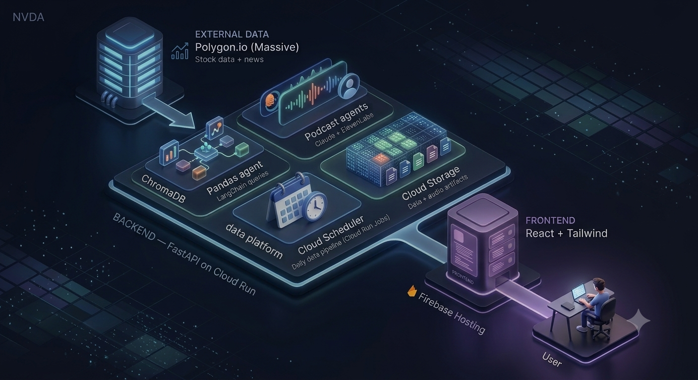
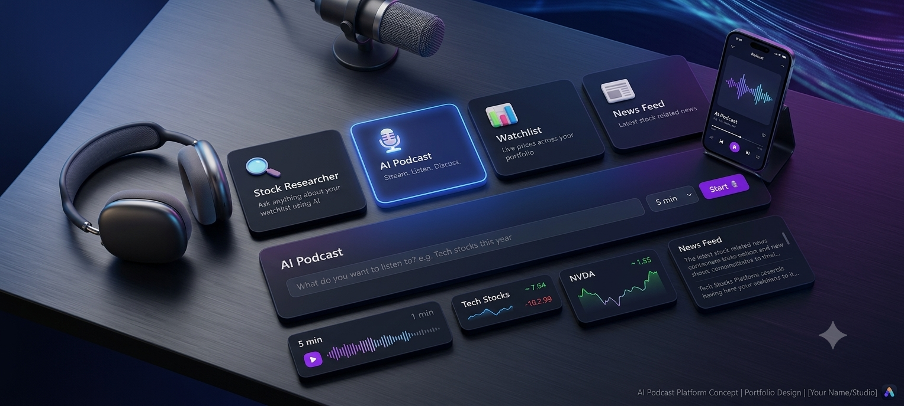
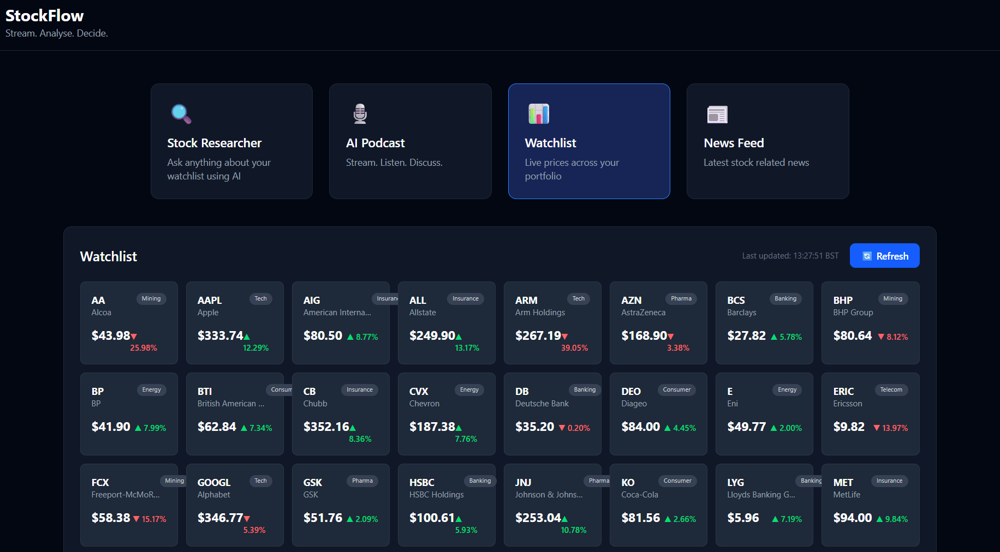

- Python
- LangChain
- Claude
- FastAPI
- React
- GCP
More details
What it does
An AI-native stock intelligence platform designed and deployed end to end, built around four core features:
Stock Researcher
Ask anything about your watchlist in plain English, powered by a LangChain pandas agent.
AI Podcast
A dual-agent Claude discussion voiced through ElevenLabs. Stream, listen, discuss.
Watchlist
Live prices across your portfolio, streamed in real time from Polygon.io.
News Feed
The latest stock-related news, with ChromaDB powering semantic search across articles.
Architecture & engineering
The backend runs on FastAPI, containerised with Docker and deployed on GCP Cloud Run, with Cloud Scheduler driving a daily data pipeline and ChromaDB serving semantic news search. The React and Tailwind frontend is hosted on Firebase, with CI/CD automated through GitHub Actions.
Full tech stack
- Tooling: Poetry, VS Code, Git/GitHub, GitHub Actions
- Data: Polygon.io (Massive) API, Pandas
- AI/ML: LangChain (+ langchain_anthropic), Anthropic SDK, ChromaDB, ElevenLabs
- Backend: FastAPI, Docker
- Frontend: React, Tailwind CSS, Firebase Hosting
- Cloud: GCP Cloud Run, Scheduler, Storage, Artifact Registry, Cloud Build


